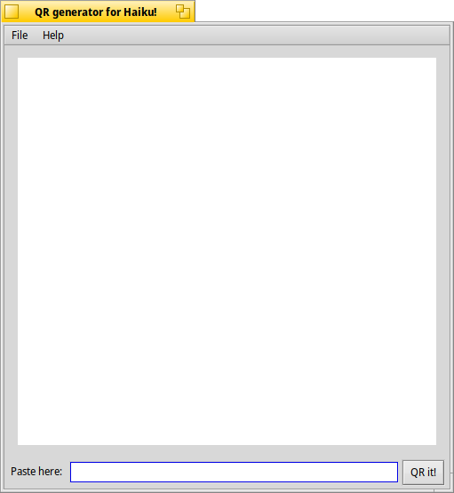
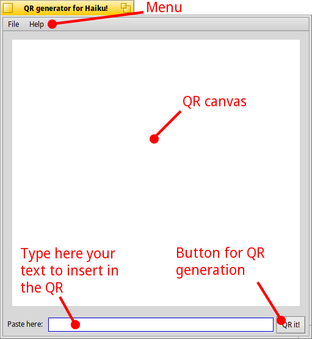

Topics
|
The
interface
the “Right to the point” interface:


a brief description of available commands:
in the "menu"
you can find 2 courtains: File and Help;
in "File" are placed the commands for generating
the QR, saving the QR, opening a
Logo to put in the middle of the QR and quitting the
application
the bottom
text entry field is for writing the text (for example a web link)
that the QR will represent
the QR it! button
generates the QR
the Help courtain has 2 commands: Help
that opens this guide and About that will show some informations
about HaiQR program
|